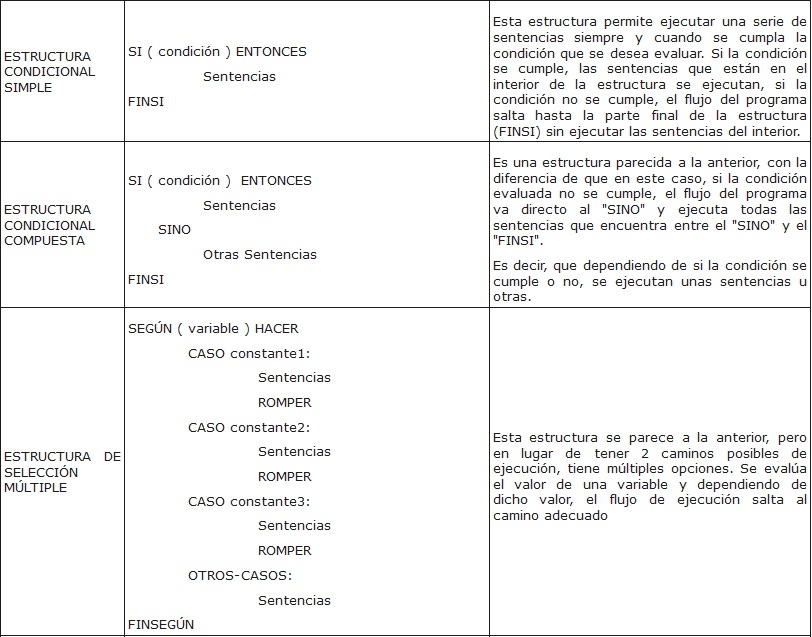
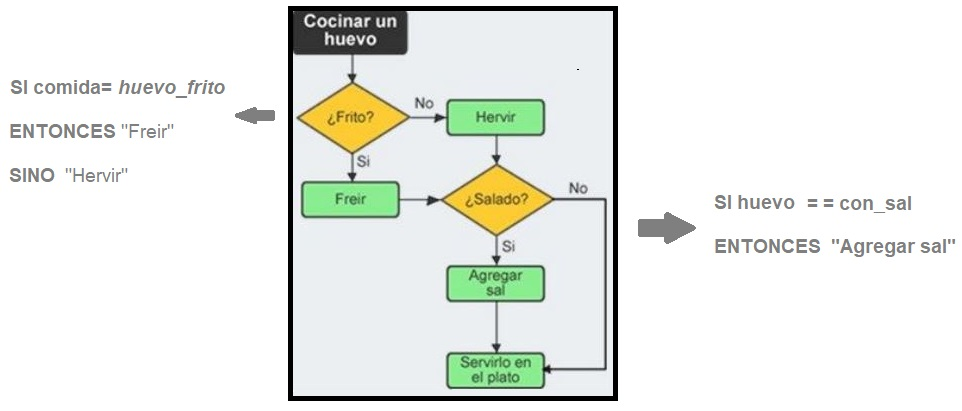

Alternativas
Una estructura condicional permite decidir por cuál alternativa seguirá el flujo del programa dependiendo del resultado de la evaluación de una condición. Para establecer condiciones complejas se utilizan los operadores relacionales y lógicos.
Se evalúa la condición y en función del resultado se ejecuta un conjunto de instrucciones u otro. Hay tres tipos de sentencias selectivas:
Condicional simple
Evaluamos la condición y si es verdadera ejecutamos el conjunto de sentencias asociadas al entonces, y si es falso, no hacemos nada y continuamos con la sentencia que haya a continuación.
Si <condición> entonces
<acciones>
Fin_si
Condicional doble
Se evalúa la condición y si es verdad se ejecutan el conjunto de acciones asociadas a la parte entonces, y si es falso se ejecutan
el conjunto de acciones asociadas a la parte sino (se elige uno de los dos caminos y se descarta el otro).
Si <condición> entonces
<acciones si verdadera>
Si no
<acciones si falsa>
Fin_Si
Selectiva múltiple
Esta estructura se representa por un selector el cual si toma el valor 1 ejecutará la acción 1, si toma el valor 2 ejecutará la acción 2, si toma el valor N realizará la acción N
Según-sea (expresion)
Caso valor1:
<acciones>
Caso valor2:
<acciones>
....
Fin_según
Un resumen en pseudocódigo sería:


Tarea Operadores y Estructuras Alternativas
- Duración:
- 20
- Agrupamiento:
- 2
Realizar expresiones utilizando los operadores y estructuras alternativas. Por ejemplo:
Si (2>3)
entonces "acción 1"
sino "acción 2"
RESULTADO. Es Falso, luego realizaría "acción 2"
Obra publicada con Licencia Creative Commons Reconocimiento 4.0